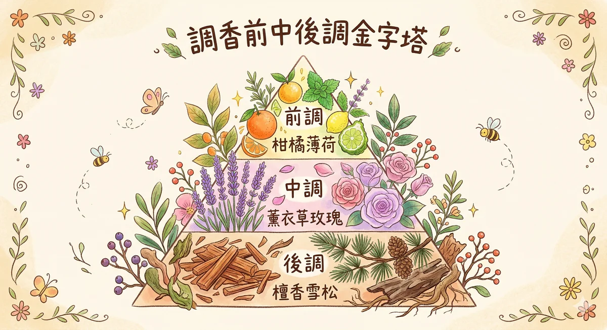

調香 調香 是運用精油揮發速度（前中後調）、分子量、蒸氣壓與嗅覺三角理論，將單支精油組合成層次豐富香氣的科學與藝術。
馥靈之鑰的調香教學不只講比例，還講情緒配方 — 例如「壓力大的時候」「準備見客人的時候」各自有不同的分子組合邏輯。
调香的科学基础
你的鼻子里大约有 400 种以上的嗅觉受体，它们合作辨认超过 10,000 种不同的气味。这不是什么神奇的天赋，是每个人生下来就有的标准配备。差別只在于，你有没有认真用过它。
调香这件事，说穿了就是理解分子。精油里的芳香分子有不同的重量，轻的分子挥发快、重的分子挥发慢。柠檬闻起来很衝但消失得快，因为它的主要成分柠檬烯分子量只有 136 Da，蒸气压高，一接触空气就急著跑掉。檀香可以在皮肤上留一整天，因为它的檀香醇分子量超过 220 Da，稳稳地待在那里不急著走。
这就是为什么调香有所謂的「嗅觉三角」，前调、中调、後调。不是谁发明的规矩，是分子物理学自然形成的结构。轻的先走，中间的撑场，重的压底。你闻到的每一瓶香水，都在演这齣三幕劇。
- 嗅觉受体：人类拥有约 400 种功能性嗅觉受体（olfactory receptors），透过组合編码辨识 10,000 种以上的气味
- 分子量决定挥发速度：分子量越小、蒸气压越高，挥发越快，所以柑橘类总是第一个报到也第一个离场
- 蒸气压的秘密：柑橘精油蒸气压高，几十分钟就淡了；木质精油蒸气压低，可以挂在衣服上好几天
- 嗅觉三角理论：前调（Top）打第一印象，中调（Middle）撑起个性，後调（Base）留下记忆。三层结构让气味有时间感
- 嗅觉疲劳：同一个味道闻超过 2 分钟，鼻子就开始麻痹。调香的时候记得闻咖啡豆「重置」一下
前中後调完整解析

想像一首歌。前奏抓住你的注意力，副歌让你跟著哼，尾奏决定你记不记得住这首歌。调香的三个层次也是这样，前调是开场白，中调是你这个人，後调是別人对你的印象。
前调 Top Notes｜头香
科学原理
前调精油的分子量通常低于 150 Da，蒸气压高，挥发速度快。它们是最先被鼻子捕捉到的气味，也是最先消散的。像一场煙火，灿烂但短暂。
气味性格
清新、明亮、充满活力。像早晨打开窗戶的那一瞬间，像咬下一片柠檬时嘴里的炸裂感。前调的工作就是让人说：「好香，这是什么？」
代表精油
- 柠檬 Lemon — 最经典的开场，乾净俐落
- 甜橙 Sweet Orange — 暖的，像阳光晒过的橘子皮
- 佛手柑 Bergamot — 柑橘里最优雅的，带点花香
- 葡萄柚 Grapefruit — 微苦的清爽，提神不甜膩
- 尤加利 Eucalyptus — 涼的、通的，像深山里的空气
- 薄荷 Peppermint — 最直接的清涼，一秒醒脑
- 茶樹 Tea Tree — 清洁感，药草味里带著安全感
调香小提醒
前调消失得快，所以不要把所有预算都花在它身上。一瓶好的香水，前调佔 20-30% 就够了。它的任务是开门，不是撑全场。
中调 Middle Notes｜心香
科学原理
中调精油分子量落在 150-250 Da 之间，挥发速度适中。前调退场之後，中调接手，通常可以撑 2 到 4 个小时。它是整瓶香水真正的主角。
气味性格
花香、草本、平衡、温柔。如果前调是握手，中调就是坐下来聊天。它不急著表现，但聊久了你会发现，嗯，这个人有意思。
代表精油
- 熏衣草 Lavender — 全世界用量最大的精油，百搭到不可思议
- 天竺葵 Geranium — 玫瑰的平替，花香带一点草本的坚韧
- 玫瑰 Rose — 最貴，但一滴就够改变整个配方的气质
- 洋甘菊 Chamomile — 甜甜的草地味，安撫感很強
- 快乐鼠尾草 Clary Sage — 微醺的感觉，让人放松却不想睡
- 马郁兰 Marjoram — 温暖草本味，像被毛毯包住
- 依兰依兰 Ylang Ylang — 甜到发膩但用对了超性感
调香小提醒
中调是配方的核心，佔比最高，通常 50% 左右。选中调就是在选你这瓶香水的个性，你想让別人记住你是花香型、草本型、还是温柔型？
後调 Base Notes｜基香
科学原理
後调精油分子量超过 250 Da，蒸气压低，挥发非常缓慢。有些後调精油可以在皮肤上留 24 小时以上。它们负责「定香」，让整个配方慢下来，持久发挥。
气味性格
温暖、深沉、安定。後调的气味像冬天的壁炉，像旧书店里的木头味，像被信任的人抱住。它不会在第一秒打动你，但 24 小时後你还记得它。
代表精油
- 檀香 Sandalwood — 奶甜的木质调，沉稳到极致
- 雪松 Cedarwood — 像走进一片針叶林，清冷又扎实
- 广藿香 Patchouli — 泥土和草药味，越陈越好闻
- 岩兰草 Vetiver — 「安静之油」，深入到骨子里的稳
- 乳香 Frankincense — 樹脂的神圣感，三千年的历史底蕴
- 没药 Myrrh — 微苦的温暖，和乳香是永远的搭档
- 香草 Vanilla — 甜的、暖的、让人想靠近的
调香小提醒
後调用量不需要多，20-30% 就好。但千万不能省。没有後调的配方就像没有结尾的故事，前面再精彩，最後散掉了，什么都不记得。
调香比例与配方
调香比例有公式，但公式是起点不是终点。先学会走路，才能跑。下面两组比例是最常见的入门配方结构，选一个开始就好。
经典比例：30% 前调 + 50% 中调 + 20% 後调
适合喜欢清新明亮感的人。前调比例高，第一印象強烈，适合白天、春夏、日常使用。
进阶比例：20% 前调 + 50% 中调 + 30% 後调
後调加重，留香更持久。适合晚上、秋冬、想要被记住的场合。
精油浓度对照表
同样的配方，稀释比例不同，用途完全不同。浓度越高不代表越好，要看你拿来做什么。
| 类型 | 精油浓度 | 留香时间 | 适合用途 |
|---|---|---|---|
| Parfum 香精 | 15-30% | 6-8 小时以上 | 正式场合、约会、想被记住的时候 |
| EDP 淡香精 | 10-15% | 4-6 小时 | 日常通勤、办公室、最百搭的浓度 |
| EDT 淡香水 | 5-10% | 2-4 小时 | 运动後、夏天、不想太浓的时候 |
| 身体按摩油 | 2-3% | 1-2 小时 | 按摩、SPA、身体保养 |
| 室內扩香 | 1-2% | 依扩香方式而定 | 熏香灯、扩香仪、喷霧 |
5 个入门配方，可以马上试
每个配方後面的数字是滴数比例，不是绝对滴数。你可以等比放大或缩小。先从少量开始，确认自己喜欢再加量。记得，精油要滴进基底油或酒精里稀释，不要直接往身上倒。
「早晨的第一口气」
鬧钟响了三次，你还是不想起来。但如果这时候有人在你鼻子旁边放一片剛切开的柠檬，事情就不一样了。这个配方就是那片柠檬的升級版，薄荷让脑袋通电，迷迭香让思绪对焦，柠檬负责把整个早晨打亮。
薄荷用量要克制，一滴就很有存在感。多了会抢走柠檬的位置。
「森林里的深呼吸」
你有没有走进一片森林，深呼吸一口，突然觉得肩膀松了？那不是错觉。樹木释放的芬多精（phytoncide）确实会降低皮质醇。这个配方试著把那座森林装进一个小瓶子里，丝柏是針叶林的气味，雪松是樹干的沉稳，乳香是樹脂的安静，佛手柑在最上层透进来一道光。
佛手柑有光敏性，如果要擦在皮肤上外出，建议用无呋喃香豆素（FCF）版本。
「睡前的温柔」
你知道熏衣草为什么被叫做「助眠之王」吗？它的主要成分沉香醇（linalool）和乙酸沉香酯（linalyl acetate），在临床研究里被反覆证实可以降低心率和交感神经活性。但光是熏衣草太单调了。加一点甜橙让它暖起来，加一滴檀香让整个夜晚慢下来，这样剛好。
可以滴在枕头旁边的卫生紙上，或加进扩香仪里。不建议直接滴在枕头上，精油会留色。
「自信的早晨」
自信不是装出来的，但气味可以帮你「记起来」你本来就有的那个状態。葡萄柚的微苦带著一种不取悅任何人的清爽，天竺葵让整个人有存在感但不攻击，姜在底层加了一把火，暖暖的，不是烧起来那种，是壁炉旁边的那种。
姜的味道很抢戏，第一次先用一滴就好。喜欢再加。
「心碎急救包」
心碎的时候你不需要道理，你需要的是一个东西让你觉得「被接住了」。玫瑰是所有精油里最貴的，但它貴得有道理，它的气味直接跟边緣系统（管情绪的大脑区域）对话。乳香帮你的呼吸慢下来，佛手柑在上面加了一点光，不是強迫你开心，是让你知道天还是亮的。
如果手边没有玫瑰精油（它真的很貴），可以用天竺葵代替。气味不同，但情绪支撑的效果接近。
调香日记模板
调香日记不是作业。它是你跟自己鼻子的对话纪录。你不需要用什么专业术语，只需要诚实地写下：我闻到了什么，我的感觉是什么。三个月後回头看，你会惊訝自己的鼻子进步了多少。
常见调香错误
每个人学调香的路上都会踩坑。这很正常。下面五个是最常见的，先看一遍，至少可以少绕一两圈。
错误一：一次加太多种精油
常见状况：「这个也好香那个也好香，全部加在一起一定超棒！」
结果通常是，什么都闻不出来。气味分子互相干擾，鼻子直接当机。入门配方用 3 到 5 种精油就好。大师級调香师一个配方可能用 30 种以上原料，但他们花了几十年才走到那里。你不需要第一天就挑战那个。
错误二：只用自己喜欢的味道
常见状况：「我只喜欢花香，所以全部用花。」
好的配方需要对比。就像画画需要明暗，音乐需要高低，一瓶全是花香的配方会显得平面、没有层次。加一点木质调或柑橘调进去，花香反而会更突出、更立体。
错误三：忘记稀释
常见状况：「我直接把精油滴在手腕上了。」
纯精油浓度太高，直接接触皮肤可能造成刺激甚至过敏。调好的精油配方要加进基底油（甜杏仁油、荷荷巴油等）或酒精里稀释。身体用油控制在 2-3%，臉部更低。这不是矜持，是安全。
错误四：急著判断好不好闻
常见状况：「剛调好闻了一下，好像不太对，算了重来。」
精油分子需要时间彼此融合。剛调好的气味和 24 小时後的气味可能天差地別。调好之後先盖起来，放至少一天，让前中後调各就各位，再决定要不要修改。耐心是调香里最被低估的技能。
错误五：盲目跟著別人的配方走
常见状况：「网路上说这个配方超讚，为什么我调出来不一样？」
每个人的嗅觉感知不同，同一个配方在你的鼻子里可能完全是另一个故事。配方是起点不是答案。用別人的配方当参考，但最终裁判永远是你自己的鼻子。它不会骗你。
3 个季节配方
季节变了，你需要的气味也会跟著变。这不是玄学，是身体的真实需求，夏天你自然想要清涼的东西，冬天就想被温暖的味道包住。中医講五运六气，其实鼻子比脑袋更早知道现在是什么季节。
春天配方｜木气升发
春天是肝气往上升的季节，整个人容易莫名煩躁、睡不好、情绪起伏。这个配方用佛手柑打开顶端的通道，天竺葵在中间稳住情绪，迷迭香从底部推一把，像春天的风穿过窗戶，不猛但很透。
佛手柑有光敏性，如果要擦在外露的皮肤上，选 FCF（无呋喃香豆素）版本，或擦完 12 小时內不要晒太阳。
夏天配方｜火气旺盛
夏天心火旺，人容易急、容易煩、容易一点小事就爆炸。这个配方像在悶热的房间里打开冷气，薄荷是那一阵涼风，熏衣草让你的神经不再那么亢奋，柠檬在最上面洒一层清新，把黏膩感洗掉。
薄荷用 2 滴已经很有存在感了。扩香的时候开窗通风，密闭空间里薄荷会让有些人觉得太刺激。
秋冬配方｜金水收藏
秋冬是收敛的季节，身体和情绪都在往內缩。这时候需要的不是提振，是包裹。乳香的樹脂气味沉稳安静，雪松像一棵大樹让你靠著，甜橙在最外层加一点暖色的光。整个配方闻起来像壁炉旁边的那种安心感。
这个配方後调比例偏高，前调只有甜橙一支。所以你剛闻的时候会先闻到橙香，等个 20 分钟木质调才慢慢出来。好东西都需要等。
调香失败急救
调香一定会失败。我做了这么多年，现在偶爾还是会调出让自己皱眉的东西。重点是失败了知道怎么救。下面四种最常见的状况，对应的解法都很简单，加一滴对的精油就好。
太甜了
常见状况：花香或甜橙类用太多，整瓶闻起来像糖浆。
加 1 滴柠檬或薄荷。柑橘类的酸和薄荷的涼都能切断甜膩感。就像甜点太甜的时候你会想喝一口茶，道理一样。先试柠檬，如果还不够再考虑薄荷，薄荷的存在感比較強，加了不太能收回来。
太沉重了
常见状况：木质调或樹脂类用太多，整瓶像塞了一團棉花在鼻子里。
加 1 滴葡萄柚或佛手柑。柑橘前调的轻盈感可以把厚重的底部撑开，让空气流进去。葡萄柚比柠檬温和一些，跟木质调的相容性更好。想像你在一个很悶的房间里打开一扇窗，那个效果。
没有层次
常见状况：闻起来平平的，说不上难闻但就是没有记忆点。
通常是缺中调。中调是配方的骨架，没有它前调和後调就是各自为政。加 1 滴熏衣草或天竺葵，这两支都是「桥樑型」精油，能把不同层次的气味串起来。熏衣草偏安静，天竺葵偏甜美，看你想往哪个方向走。
味道衝突
常见状况：两支精油放在一起就是不对勁，互相打架。
加 1 滴乳香。乳香是精油界的万用调和劑，它的分子结构很特別，几乎跟所有精油都能和平共处。它不会抢味道，但会在衝突的气味之间建立一个缓衝区。如果乳香都救不了，那可能是配方方向本身就不对，与其硬救不如重调一瓶。
精油香气六大家族
每支精油都有自己的「家族」，同一个家族的成员通常个性相近、彼此合拍。跨家族调配才是让配方有层次的关键。先认识每个家族的脾气，再来决定怎么让它们同桌吃饭。
柑橘家族 Citrus
家族特色
柑橘类精油几乎都是前调，挥发速度快、气味直接、让人瞬间清醒。它们的共同化学成分是单萜烯（如 limonene），分子量小、蒸气压高，所以总是第一个出场。大部分人对柑橘的接受度极高，是最「安全」的开场白。
代表成员
- 柠檬 Lemon — 最乾净的酸，俐落不拖泥带水
- 甜橙 Sweet Orange — 暖的、甜的、像晒了太阳的果皮
- 佛手柑 Bergamot — 柑橘里最优雅的，带花香余韵
- 葡萄柚 Grapefruit — 微苦的清爽，提神不膩人
- 莱姆 Lime — 比柠檬更尖銳一点，有一种叛逆感
- 红橘 Tangerine — 最甜的柑橘，像小孩子的笑声
最佳搭配
柑橘 × 花香（佛手柑 + 熏衣草 = 经典组合），柑橘 × 草本（柠檬 + 迷迭香 = 醒脑），柑橘 × 木质（甜橙 + 雪松 = 温暖有深度）。柑橘跟柑橘之间也能混搭，但要注意挥发速度太接近，缺少层次感。
安全提醒
佛手柑、柠檬、莱姆、苦橙含呋喃香豆素（furocoumarins），塗在皮肤上後曝晒可能造成光敏性反应（红肿、色素沉澱）。如果要外用，选 FCF 版本（去呋喃香豆素），或擦完 12 小时內避免日晒。
花香家族 Floral
家族特色
花香类精油大多落在中调，气味柔和、持久度中等。它们含有丰富的酯类（esters）和醇类（alcohols），这也是为什么花香精油在情绪纾解方面的效果最被广泛研究。花香家族是调香的「心脏」，少了它整瓶配方会显得空洞。
代表成员
- 熏衣草 Lavender — 百搭之王，放到哪里都合理
- 玫瑰 Rose — 最昂貴，一滴改变全局
- 天竺葵 Geranium — 玫瑰的平替，兼具花香和草本
- 依兰依兰 Ylang Ylang — 浓烈甜美，像夏夜的空气
- 茉莉 Jasmine — 深沉的花香，带点微醺感
- 橙花 Neroli — 苦甜交织，高端香水的常客
最佳搭配
花香 × 木质（玫瑰 + 檀香 = 深沉浪漫），花香 × 柑橘（熏衣草 + 佛手柑 = 明亮舒缓），花香 × 辛香（茉莉 + 姜 = 出乎意料的性感）。依兰依兰和茉莉用量要极克制，它们的甜度很高，多一滴就会抢走所有人的戏份。
草本家族 Herbal
家族特色
草本精油橫跨前调到中调，气味清新但带药草感。它们富含氧化物（如 1,8-cineole）和酮类（如 camphor），在功能性配方里扮演重要角色。草本家族是「做事型」的精油，不是拿来好闻的（虽然也好闻），是拿来解决问题的。
代表成员
- 迷迭香 Rosemary — 提神醒脑的第一名，学生的好朋友
- 薄荷 Peppermint — 最直接的清涼感，一秒见效
- 尤加利 Eucalyptus — 通鼻顺畅，像深山里的空气
- 茶樹 Tea Tree — 清洁界的万用丹，有安全感的味道
- 快乐鼠尾草 Clary Sage — 微醺放松，名副其实的「快乐」
- 百里香 Thyme — 暖的草本味，免疫力的守护者
最佳搭配
草本 × 柑橘（迷迭香 + 柠檬 = 经典醒脑配方），草本 × 木质（尤加利 + 雪松 = 森林感），草本 × 花香（薄荷 + 熏衣草 = 清涼安撫双管齐下）。草本家族气味偏強，在配方里通常佔 1-2 滴就够了。
木质家族 Woody
家族特色
木质类精油大多是後调，分子量大、挥发慢、留香持久。它们含有丰富的倍半萜烯和倍半萜醇（如 santalol、cedrol），在情绪上有接地、稳定的作用。木质家族是配方的「地基」，它撑不起第一印象，但撑得起整个故事。
代表成员
- 檀香 Sandalwood — 奶甜木质，沉稳到极致
- 雪松 Cedarwood — 冷冽的針叶林感，清爽中带扎实
- 丝柏 Cypress — 清新木质调，有一种修道院的安静
- 松樹 Pine — 直接、清新、像剛砍下来的圣诞樹
- 花梨木 Rosewood — 温暖甜美的木质，带微微花香
- 岩兰草 Vetiver — 「安静之油」，泥土深处的稳定
辛香家族 Spicy
家族特色
辛香精油含有酚类（如 eugenol）和醛类（如 cinnamaldehyde），气味辛辣、温暖、带刺激感。它们在配方里的角色像辣椒在菜餚里的角色，用一点点就能让整道菜活起来，用太多会盖掉所有味道。辛香料用量通常只佔配方的 5-10%。
代表成员
- 姜 Ginger — 暖的、辣的，像冬天喝姜茶
- 肉桂 Cinnamon — 甜辣交织，节慶的味道
- 丁香 Clove — 牙痛急救的老朋友，暖到骨子里
- 黑胡椒 Black Pepper — 乾燥的辛辣，让人精神一振
- 荳蔻 Cardamom — 东方的温柔辛香，有一种异国感
安全提醒
辛香精油浓度高时对皮肤刺激性強，特別是肉桂皮精油（Cinnamomum cassia）。外用浓度建议控制在 0.5% 以下。丁香和肉桂不建议直接塗在臉部。扩香使用相对安全，但要注意通风。更完整的安全规范可以参考芳疗共享园地的安全速查卡。
樹脂家族 Resin
家族特色
樹脂精油是从樹木分泌的樹脂中蒸餾而来，气味厚实、浓郁、带有古老的神圣感。它们含有大量的单萜烯和倍半萜烯，在精油界是「万用调和劑」，几乎跟什么精油都能合作。在古代，樹脂精油比黄金还貴重，用在宗教仪式和皇室香品。
代表成员
- 乳香 Frankincense — 精油界的「瑞士刀」，百搭又深沉
- 没药 Myrrh — 微苦的温暖，乳香的永远搭档
- 安息香 Benzoin — 香草般的甜，像焦糖布丁的底
- 欖香脂 Elemi — 清新版的乳香，带柑橘调
最佳搭配
樹脂精油几乎百搭。乳香 + 任何精油都能和谐共处。没药 + 乳香是三千年不败的经典组合。安息香 + 花香（橙花或玫瑰）是高端香水的隐藏配方。樹脂精油最适合当後调的「压底」角色，让整个配方沉得下来、留得住。
5 个进阶配方
前面 5 个入门配方用 3-5 支精油、比例简单。下面这 5 个配方稍微复杂一点，用 4-6 支精油，层次更丰富。如果你已经调了几十瓶，准备升級挑战，从这里开始。
「地中海的午後」
想像坐在希腊小岛的白色露台上，海风带著橙花的香气、远处有迷迭香的药草园。这个配方试著把那个画面装进瓶子里。佛手柑和甜橙打底的阳光感，迷迭香是远处草地的味道，橙花是空气里最精致的那一层，雪松让整个画面安定下来不会飘走。
橙花精油很貴，用 1 滴就好。如果没有橙花，用苦橙叶（Petitgrain）代替，气质不同但同样好闻。
「东方茶室」
这个配方的灵感来自京都的茶室。推开障子门，空气里有木头的味道、远处飘来一丝茉莉花茶的甜。檀香是那间茶室的木头，广藿香是泥土墙的气味，茉莉是杯中的那一朵花，佛手柑让整体不会太沉、太暗。
广藿香的味道很特別，有人极愛有人极怕。第一次先用 1 滴试试，它会随时间变得越来越好闻。放一週後再回来闻，你可能会改观。
「会议室的秘密武器」
专注力不是你「努力」就有的东西，但你可以创造一个让大脑更容易专注的环境。迷迭香的 1,8-cineole 成分在研究里被反覆证实可以提升认知表现。柠檬让空气变得清新、薄荷让脑袋保持警觉、丝柏在底层提供稳定感，不让你浮躁。
这个配方最适合用水氧机扩香。不建议塗在皮肤上（薄荷 + 迷迭香的浓度太高），用吸入的方式效果最好也最安全。
「週五夜的奖励」
这个配方是为了那种「今天辛苦了，你值得」的时刻设计的。依兰依兰是甜的、花的、有一点曖昧的。快乐鼠尾草让身体松开来，有一种微醺不醉的舒服感。岩兰草在最底层，像一张很厚的地毯接住你。葡萄柚在顶端加一丝清爽，不让整体太膩。
依兰依兰只要 1 滴就好，它的甜度和存在感都很強。快乐鼠尾草有微微的肌肉放松作用，如果你容易在按摩後想睡，那就是它的功劳。
「雨天的书房」
下雨天的书房有一种特別的空气。窗外的湿气、书页的紙味、远处的木头家具。这个配方试著重建那个气味：乳香和雪松是书架上的老书和木头书櫃，熏衣草是窗台上那盆被雨水打过的花，佛手柑是你手边那杯伯爵茶。
这个配方前中後调比例接近 2:2:2，算是比較均衡的结构。它不会有很強的第一印象，但会慢慢展开，适合需要长时间沉浸的场合。
四季调香：每个季节 2 个配方
前面有 3 个季节配方，这里补齐成每个季节各 2 个。一个偏白天使用，一个偏夜晚。身体对气味的需求随著季节在变，春天需要疏通，夏天需要清涼，秋天需要收敛，冬天需要温暖。中医的五运六气講的其实就是这件事。更深入的经络 × 精油搭配可以看经络精油指南。
春日晨光
春天的早晨应該是轻盈的。肝气在春天往上升，如果升太猛人会煩躁，升不动人会疲倦。这个配方用佛手柑和葡萄柚打开顶端，让气有地方走；薄荷推一把、丝柏在底部引导方向。
春夜安眠
春天晚上最怕的是脑子停不下来。白天肝气一直在跑，到了晚上如果没收好，就是整夜翻来覆去。天竺葵安撫上衝的肝气，熏衣草让神经安静下来，甜橙在外面裹一层暖意，像被一条温柔的毯子盖住。
夏日清涼
三十几度的午後，你只想把自己泡在冰水里。这个配方是用鼻子泡的冰水。薄荷和尤加利提供即时的涼感，柠檬切断悶热，茶樹在底部加一层清洁感。整个配方闻起来像站在瀑布旁边。
夏夜沉香
夏天的夜晚空气黏膩，心火旺的人更容易失眠。这个配方不走清涼路线，反而用深沉的後调把人往下拉。檀香和乳香像两个錨，把飘浮的心稳住。洋甘菊温柔地铺在中间，佛手柑在顶端透进一丝不甜膩的光。
秋日金风
秋天乾燥，肺气需要被润养。尤加利打开呼吸道，让空气进得来；熏衣草在中间安撫因为乾燥而敏感的情绪；雪松在底层提供一种秋天特有的木头温暖感。佛手柑在最上面加一点不刺眼的阳光。
秋夜暖炉
秋天的夜晚开始有涼意了。这个配方像一杯加了肉桂的热苹果酒。甜橙是那颗苹果，肉桂是那根肉桂棒（只要一点点），乳香和安息香在底部提供温暖又安定的存在感。闻起来就是「回家」的味道。
肉桂只用 1 滴，皮肤刺激性強，这个配方建议扩香使用，不要直接塗在身上。
冬日暖阳
冬天的白天短，人容易懶散、没动力。这个配方用姜和黑胡椒从身体里面暖起来（不是外面包一层的那种暖），迷迭香把脑袋叫醒，甜橙在最外层提供一点不费力的活力。像冬天早上晒到第一道太阳。
姜和黑胡椒的辛辣感在扩香时会比較明显，密闭空间里先试 15 分钟看看反应。
冬夜极光
冬天的夜晚最适合深睡眠。这个配方全部用後调和中调，刻意不放前调。没有突然的「嗨」，只有慢慢沉下去的安定。檀香和岩兰草是两根深入地底的錨，熏衣草让呼吸慢下来，没药在最深处提供一种古老的安全感。
这个配方完全没有前调，所以剛滴出来的时候你可能觉得「闻不太到」。给它 5 分钟，等温度把分子带出来，你会感受到它的存在。
情绪调香：5 个情绪对应配方
情绪不是需要被「解决」的问题，而是需要被「接住」的讯号。调香可以帮你做这件事：不是让焦虑消失，而是让焦虑的你觉得被理解了。下面 5 个情绪配方，不是魔法，是气味分子和你的神经系统之间真实的对话。如果你对情绪觉察更有興趣，芳疗科学专欄里有更多嗅觉 × 情绪的研究。
焦虑时
焦虑的时候交感神经过度活躍，心跳加速、呼吸变淺。熏衣草的沉香醇会和 GABA 受体作用，降低神经興奋度。佛手柑让呼吸变深，乳香让整个人的节奏慢下来。岩兰草在最底层当定錨，像在跟你说「你的脚还踩在地上，没事的」。
可以滴 1-2 滴在手心搓热，捧在鼻子前深呼吸 5 次。焦虑的急救比扩香更有效的是直接吸入。
失眠时
失眠通常不是身体不累，是脑子不肯关机。这个配方的策略是「从上面往下压」。洋甘菊让飘在空中的思绪往下沉，熏衣草降低心率，檀香拉长呼吸的间隔。甜橙在最外层加一层不刺激的暖意，像有人在你耳边很小声地说「可以了，睡吧」。
睡前 30 分钟开始扩香，入睡後关掉。不建议整夜扩香，鼻子会疲劳，效果反而降低。
需要专注时
2003 年 Northumbria University 的研究发现，吸入迷迭香精油的受试者在记忆测验中表现显著提升。迷迭香的 1,8-cineole 被吸入後会进入血液，影响乙醯膽碱的代谢，而乙醯膽碱正是跟记忆力直接相关的神经传导物质。柠檬提振精神，薄荷保持警觉。
这个配方全部偏前调和中调，留香时间短。如果需要长时间专注，每 90 分钟补扩香一次。
需要自信时
自信的味道是什么？不是浓烈，是沉稳。这个配方里没有任何抢戏的角色。葡萄柚是微苦的清醒，不讨好別人的那种清爽。天竺葵让你有存在感但不攻击。姜和黑胡椒在底部加了一把內敛的火，暖的，但不烧人。雪松压底，像穿了一双很稳的鞋子。
可以调成滚珠瓶（10ml 荷荷巴油 + 以上配方），上场前塗在手腕和耳後。
需要放松时
放松不是什么都不做，是让身体的紧绷感从里面松开来。快乐鼠尾草的乙酸沉香酯含量比熏衣草更高，放松效果很直接。依兰依兰降低血压和呼吸频率。马郁兰是「温暖的拥抱」，像被毛毯裹住。甜橙让整体不沉悶，加了一点不费力的愉悅感。
依兰依兰 1 滴就好。快乐鼠尾草有微微的肌肉放松效果，使用後不建议马上开车。
安全浓度速算表
调香最容易忽略的事情就是浓度。精油是高度浓缩的植物萃取物，一滴纯精油可能含有数百种化学成分。直接用在皮肤上可能造成刺激或过敏。稀释不是矜持，是安全的底线。
万用公式
| 使用部位 | 建议浓度 | 10ml 基底油 | 30ml 基底油 | 适用情境 |
|---|---|---|---|---|
| 臉部 | 0.5-1% | 1-2 滴 | 3-6 滴 | 臉部精华、护肤油 |
| 身体 | 2-3% | 4-6 滴 | 12-18 滴 | 按摩油、身体保养 |
| 局部 | 3-5% | 6-10 滴 | 18-30 滴 | 酸痛部位、肩颈 |
| 孕婦 | 0.5-1% | 1-2 滴 | 3-6 滴 | 仅限安全精油，避开禁用清单 |
| 儿童（3-12 岁） | 0.5-1% | 1-2 滴 | 3-6 滴 | 熏衣草、甜橙、洋甘菊为首选 |
| 婴幼儿（0-3 岁） | 0.1-0.25% | 约 0.5 滴 | 1-1.5 滴 | 仅熏衣草、洋甘菊，建议先咨询 |
| 泡澡 | — | 3-8 滴，需先溶于载体（牛奶/蜂蜜/沐浴鹽） | 精油不溶于水，直接滴会浮在表面刺激皮肤 | |
常见基底油选择
- 甜杏仁油 — 最百搭的入门基底油，质地轻盈、吸收快、价格亲民。适合全身按摩
- 荷荷巴油 — 严格来说是液態蜡，稳定性极高、不容易氧化。适合臉部、做成滚珠瓶
- 椰子分餾油 — 无味、轻薄、不油膩。适合夏天使用或搭配气味比較细致的精油
- 葡萄籽油 — 质地最轻的基底油之一，价格便宜。适合油性肌肤的按摩
- 玫瑰果油 — 含维他命 A 和必需脂肪酸，本身就有护肤功效。适合臉部精华
- 酪梨油 — 质地浓厚、滋润度高。适合乾燥肌肤或冬天使用，可以和轻质油混合
今日调香灵感
不知道今天要调什么？让直觉来选。按下面的按鈕，系统会从所有配方里随机推薦一个给你。不是算命，是给鼻子一个今天的起点。